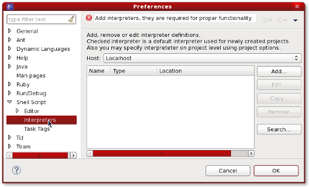
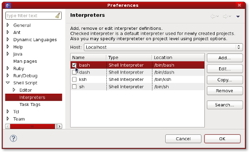
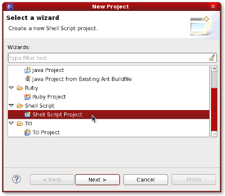
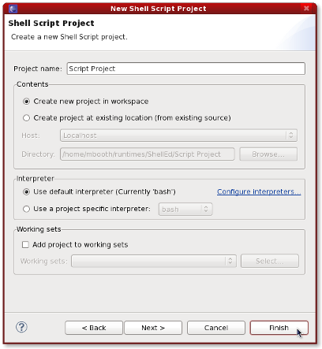
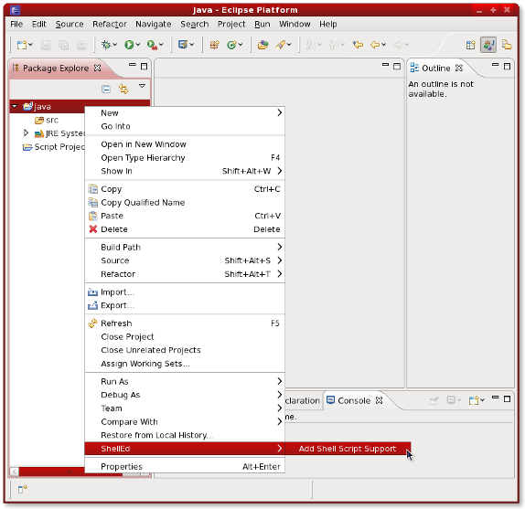

| Getting Started | ||
|---|---|---|
|
|
|
|
| Introduction | Updating This Guide | |
To verify that Eclipse is set up correctly for Shell Script development you need to make sure that an interpreter is configured. Select the menu item Window -> Preferences to open the workbench preferences. Then choose the Shell Script -> Interpreters preference page to show the current interpreter configuration.

If there are no interpreters listed, you may add an interpreter manually by pressing the Add button, or let ShellEd try to automatically discover interpreters by pressing the Search button. Once you have added one or more interpreters, you may select which interpreter to use by default by checking the box next to the interpreter's name.

To create a new shell script project, select the menu item File -> New -> Project and select Shell Script Project from the list of available project types.

On the next page, you will be asked to choose a name and location for the project and to choose an interpreter.

If there are no interpreters configured in ShellEd, it will say that your default interpreter is "currently undefined." You will still be allowed to create the project, but you will not be able to run or debug your shell scripts. It is highly recommended that you configure at least one interpreter and you may do so at this point by clicking the Configure Interpreters link, which will take you to the preferences page described in the previous section.
After clicking the Finish button, the newly created shell script project will be visible in the Project Explorer type views.
You probably have shell scripts in other projects that you want to run and debug. In this case, you can add shell script support to existing, non-shell script projects by right-clicking them and choosing the ShellEd -> Add Shell Script Support menu item.

|
|

|
|
| Introduction | Updating This Guide |